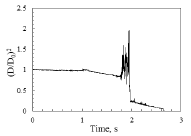

Syam S.


The combustion characteristics of ethanol/Jet A-1 fuel droplets having three different proportions of ethanol (10%, 30%, and 50% by vol.) are investigated in the present study. The higher volatility differential between ethanol and Jet A-1 and the nominal immiscibility of the fuels seem to result in combustion characteristics that are rather different from our previous work on butanol/Jet A-1 blends. Abrupt explosion was facilitated in fuel droplets comprising lower proportions of ethanol (10%), possibly due to insufficient nucleation sites inside the droplet and the partially unmixed fuel mixture. For the fuel droplets containing higher proportions of ethanol (30% and 50%), micro-explosion occurred through homogeneous nucleation, leading to the ejection of secondary droplets and a significant reduction in the overall droplet lifetime. The rate of bubble growth is nearly similar in all the blends of ethanol; however, the evolution of ethanol vapor bubble is significantly faster than that of a vapor bubble in the blends of butanol. The probability of disruptive behavior is considerably higher in ethanol/Jet A-1 blends than that of butanol/Jet A-1 blends. The Sauter mean diameter of the secondary droplets produced from micro-explosion is larger for blends with a higher proportion of ethanol. The growth of vapor bubble was also witnessed in the secondary droplets, which lead to the further breakup (puffing/micro-explosion).
The atmospheric carbon dioxide, carbon monoxide, and nitrogen oxides have been increasing since the industrial revolution. The threat to the depletion of petroleum and its significant impact on the environment leads us to the renewable energy sources. An alternative fuel to Jet A-1 should be compatible with Jet A-1 and should also undergo efficient combustion process. In the present study, the combustion characteristics of butyl butyrate, limonene, and their blends with Jet A-1 droplets were investigated. The droplet temperature profiles of the blends of butyl butyrate and limonene were observed to be nearly similar to Jet A-1. The regression rate measurements of the fuel droplets show that butyl butyrate and limonene have burn rates that are almost similar to Jet A-1. The temporal evolution of butyl butyrate droplets is divided into three stages, the volumetric expansion, unsteady regression, and steady regression. The sooting propensity of pure limonene and its blends with Jet A-1 was found to be significantly higher than pure Jet A-1. Whereas, a much lower sooting propensity was observed for pure butyl butyrate and its blends with Jet A-1. The sooting propensity decreases in the order of pure limonene, L50, pure Jet A-1, BB50, and pure butyl butyrate.



The secondary atomization caused by puffing and micro-explosion phenomena play a significant role in enhancing atomization in the combustion chamber. The physical processes such as bubble nucleation and dynamics of bubble growth leading to puffing/micro-explosion are not well understood. Puffing and Micro-explosion phenomena in the ethanol/Jet A-1 blends (E10, E30, and E50) have been studied for relatively larger diameter droplets. Micro-explosions were found to reduce the total burning time of the droplet. The abrupt explosion phenomenon was noticed only in E10 blend, which was a dominant phenomenon in this particular blend. Micro-explosions were categorized as undisturbed micro-explosion and puffing induced micro-explosion. Undisturbed micro-explosion is considered as a special case where the bubble growth leading to micro-explosion occurs without prior puffing. Puffing was observed to increase the growth of the vapor bubble as well as the intensity of breakup. Puffing/micro-explosion phenomenon was characterized by the normalized squared onset diameter (NOD). The onset of bubble growth was found to be the prerequisite of puffing and only in a few cases the onset of bubble nucleation lead directly to micro-explosion. NOD was observed to decrease with the increase in the proportion of ethanol component. Temporal variation of bubble radius has been shown for all the ethanol/Jet A-1 blends. The lower degree of superheating of the ethanol component leads to the puffing phenomenon whereas the higher degree of superheating leads to the micro-explosion phenomenon. Puffing was observed to be the dominant source of droplet ejections. The velocity of ejected droplets was found to increase with the increase in the ethanol proportion.


The current trend in aviation field is the use of alternative fuels (biofuels) or their blends with aviation kerosene, because of the fluctuations and increase in fuel price and also for reducing HC and CO emissions. Fuel is supplied into the combustion chamber in the form of fine droplets. Droplet combustion experiments give deeper understanding about the burning behaviour, efficiency and other properties of fuels. The present study focuses on the blending of petrol (gasoline), diesel and kerosene with biofuels like ethanol, and butanol. Base fuels blended with 5%, 10% and 20% by volume of ethanol and butanol is used in this study. The experimental result shows that butanol and ethanol blending improved the burning characteristics of base fuels. Diesel and kerosene have shown improvement in burn rate, whereas the burn rate of petrol (gasoline) is reduced by blending. We also observed micro explosions during droplet burning, and their intensity increasing with blending ratios. These micro explosions are due to the volatility difference between the base fuel and the blend and they improve the burn rate of diesel and kerosene. The results also showed improvement in droplet temperature distribution with blending.


Generating efficient blade profiles are the prerequisite for developing a high-performance compressor. Therefore, the goal of a blade design is to achieve the desired flow turning with minimum losses, within the constraint of the geometric orientation of the blade row. With the blade shapes becoming more sophisticated, the development of blade shapes is spanned in three generations: the first generation is the Circular-Arc Profile, the second generation is the Controlled Diffusion Airfoil (CDA), and the third generation is the optimized blades. In this present investigation, a CDA profile has been selected and is parameterized with Bezier-PARSEC (BP) parameterization method. From the BP parameters, the design variables are selected for the optimization using Genetic Algorithm (GA) as an optimization technique. The BP parameters include the aerodynamic and geometrical parameters. The objective function defined in the GA is to minimize the total pressure loss in the compressor cascade for a high subsonic inlet condition. The CFD software’s Gambit and Fluent are used for simulation and total pressure loss is calculated in the cascade geometry. The coupling of BP parameterization, GA, and CFD increase the convergence speed of the optimization. This investigation results from an airfoil shape for the compressor cascade arrangement with optimum total pressure loss.